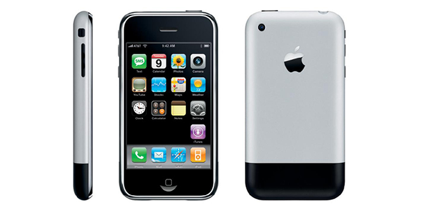

và những cống hiến của ông cho ngành Khoa Học Máy Tính
Iphone
 Hình 18: Điện thoại thông minh Iphone
Ngày 09 Tháng 1 năm 2007, tại sự kiện thường niên Macworld tổ chức tại Trung tâm Moscone ở San Francisco, Steve Jobs đã giới thiệu với cả thế giới một thiết bị được xem là một cuộc cách mạng của ngành điện thoại di động nói riêng và của vả ngành công nghệ nói chung. Đó chính là Iphone. Chiếc iPhone đầu tiên được bán ra vào ngày vào ngày 29-6-2007. Đây được xem là dấu mốc quan trọng của khoa học kĩ thuật thế kỉ 21. Iphone đã thay đổi hoàn toàn định nghĩa điện thoại. Nếu trước đây điện thoại được biết đến với các thiết bị có bàn phím cơ học, màn hình nhỏ, tương tác với người dùng thông qua các phím lệnh. Thì giờ đây, Steve Jobs đã tạo ra một kiệt tác với màn hình cảm ứng, loại bỏ bàn phím cơ cổ điển ( chỉ giữ lại phím home ). Các tương tác giao tiếp giữa nguời dùng với điện thoại trở nên thú vị và trực quan hơn bao giờ hết với màn hình cảm ứng. Điểm nổi bật của Iphone là sử dụng hệ điều hành để kiểm soát các hoạt động, giao diện ... Iphone thực sự đã thay đổi làng công nghệ thế giới! Thành công của tất cả các thế hê Iphone đã đem đến cho Apple khoảng lợi nhuận khổng lồ. Biến Apple trở thành tập đoàn có giá trị nhất thế giới với tổng tài sản ước tính lên đến hơn 700 tỉ USD. Bên cạnh đó Iphone trở thành một biểu tượng của làng smartphone thế giới, là chuẩn mực và là một trong những đầu tàu định hướng sự phát triển của điện thoại thông minh. Thị trường smartphone Mỹ cũng như đa số các quốc gia khác, Iphone nắm giữ tỉ lệ phần trăm sản phầm rất cao. Tính đến cuối năm 2015, iPhone đã có một thị phần 43,6, tiếp theo là Samsung (27, 6%), LG (9, 4%), và Motorola (4, 8%). Thế hệ iPhone mới nhất là iPhone 7 , được công bố tại một sự kiện đặc biệt vào ngày 07-9-2016 Tại Bill Graham Civic Auditorium ở San Francisco bởi Giám đốc điều hành của Apple-Tim Cook và chính thức được bán ra phát hành vào ngày 16 tháng 9 năm 2016.